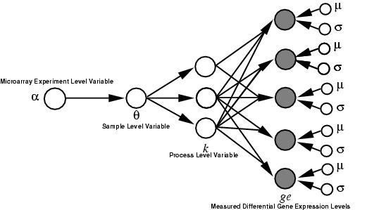
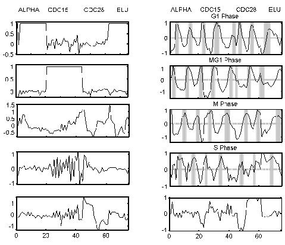
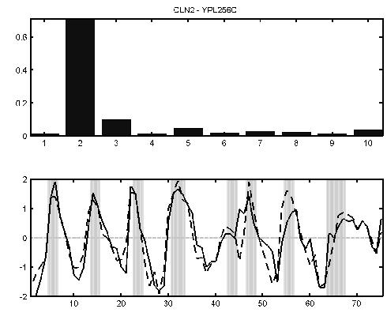
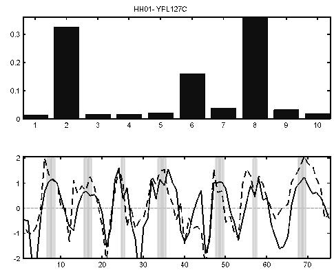

Simon Rogers, Mark Girolami, Colin Campbell and Rainer Breitling
Abstract
We present a new computational technique which enables the probabilistic analysis of cDNA microarray data and we demonstrate its effectiveness in identifying features of biomedical importance. A hierarchical Bayesian model, called Latent Process Decomposition (LPD), is introduced in which each sample in the dataset is represented as a combinatorial mixture over a finite set of latent processes, which are expected to correspond to biological processes. Parameters in the model are estimated using efficient variational methods. This type of probabilistic model is most appropriate for the interpretation of measurement data generated by cDNA microarray technology. For determining informative substructure in such datasets the proposed model has several important advantages over the standard use of dendrograms. Firstly, the ability to objectively assess the optimal number of sample clusters. Secondly, the ability to represent samples and gene expression levels using a common set of latent variables (dendrograms cluster samples and gene expression values separately which amounts to two distinct reduced space representations). Thirdly, in constrast to standard cluster models, observations are not assigned to a single cluster and thus, for example, gene expression levels are modeled via combinations of the latent processes identified by the algorithm. We show this new method compares favourably with alternative cluster analysis methods. To illustrate its potential we apply the proposed technique to several microarray datasets for cancer. For these datasets it successfully decomposes the data into known subtypes and indicates possible further taxonomic subdivision in addition to highlighting, in a wholly unsupervised manner, the importance of certain genes which are known to be medically significant. To illustrate its wider applicability we also illustrate its performance on a microarray dataset for yeast.

Schematic of the LPD model structure
Publications
The Latent Process Decomposition of cDNA Microarray Data Sets. S. Rogers, M. Girolami, C.Campbell and R.Breitling IEEE/ACM Transactions on Computational Biology and Bioinformatics Vol.2, No. 2, April-June 2005
Identification of prognostic signatures in breast cancer microarray data using Bayesian techniques. L. Carrivick, S. Rogers, J.Clark, C.Campbell, M. Girolami and C.Cooper Journal of the Royal Socisety Interface Vol.3, p 367-381, 2006
Code
MATLAB:[matlab_lpd.tar.gz],[ovarian.mat]. Download the two files, extract the archive. Load Matlab, move to the correct directory and type lpd_demo. Note, code requires statistical toolbox and the psi function.
C++:[LPD-CPP.tar.gz].
Example Results

The 10 processes identified by LPD for the yeast cell cycle. The cycling processes peak in the various phases of the cell cycle as highlighted on subplots 2, 4, 6 and 8. The four different synchronization methods are indicated at the top. Our numbering convention is odd numbers starting from the top subfigure for the left-hand subfigures and even numbers starting from the top for the right-hand subfigures.

The expression levels of the G1-specific cyclin CLN2 YPL256C peaks in G1 phase (lower panel, solid line). The dotted line is the sum of the mean for each process weighted by the value of the gene-specific variational parameter for each process (top bar chart). In this case it can be seen that the second process profile (G1 phase) is indeed dominant for this gene.

The expression levels of the histone H1 gene (YPL127C) peaks in S phase (lower panel, solid curve). The dotted line is the sum of the mean for each process weighted by the value of the gene-specific variational parameter for each process (top bar chart). In this case it can be seen that a combination of the second, sixth and eighth process profiles is required for this histone. This combination corresponds to the G1, M and S phase processes identified by LPD.